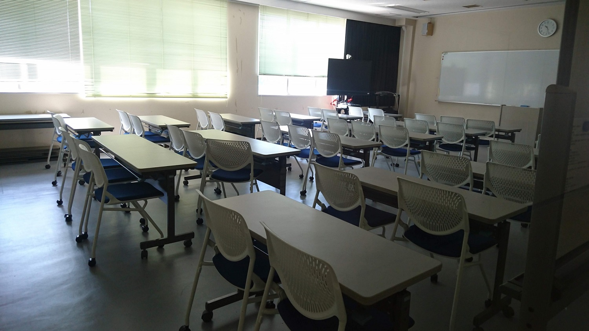
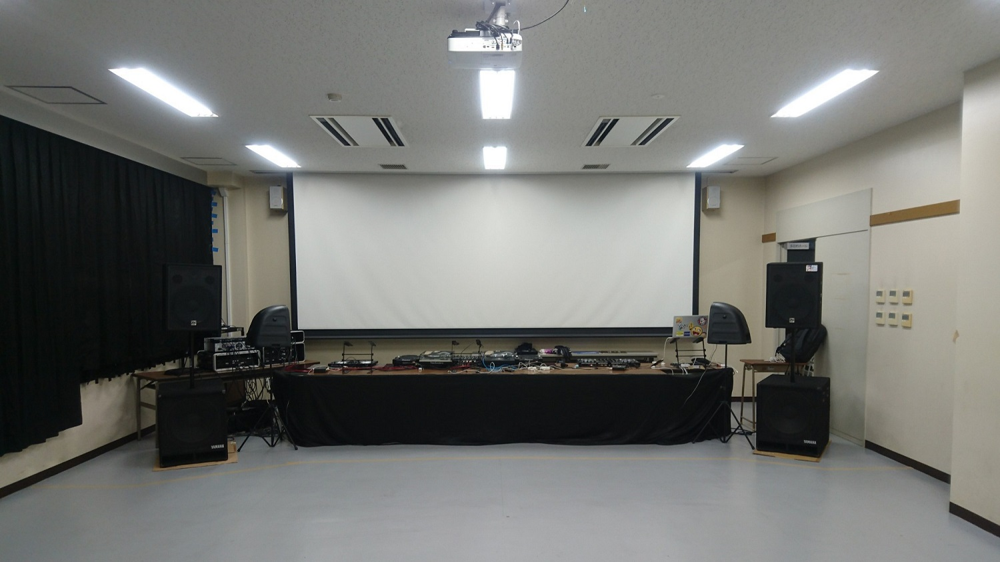
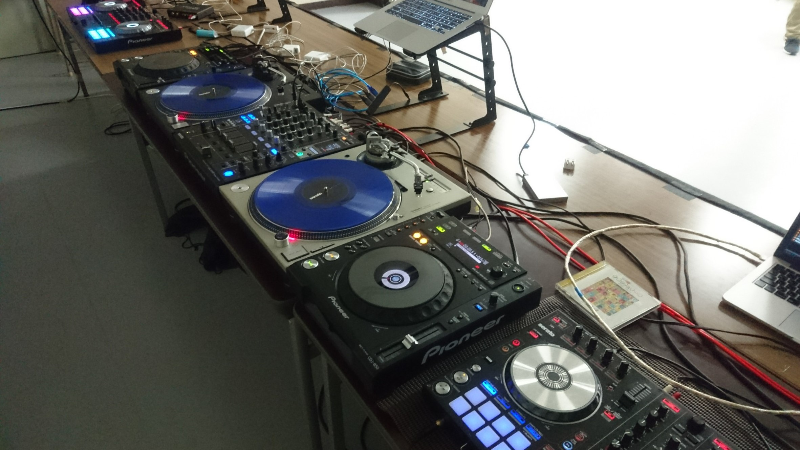

Unsignedとは？


画像は2017年開催のものです。
小山高専の音楽研究同好会が開催するDJイベントのことです。今年で7回目になります。
House,ドラムン,hardstyle,hardcore,trance,音ゲー,アニソン,ボカロ等のさまざまなジャンルで文化祭を盛り上げます。
音研DJの圧倒的な強さを体感してください。
講義で使われる部屋がDJブースに変貌！！


もちろん、DJ用の部屋ではないので設備や機材は全くありません。
DJ機材、スピーカー、アンプ等、イベントに必要な物は、音研部員が所有している機材で開催しています。
機材は全て持ち込み

過去のUnsigned
過去のイベントサイトをまとめてみました。参考にしてみてください！
新入部員募集中！
音楽研究同好会は、新入部員を募集中です。音楽が好きな高専生同士が交流出来る部活動です。活動は、月曜日の17:00~19:00に専攻科棟4F多目的メディアホールで行っています。工陵祭のDJイベントを見て入部する人がほとんどです。興味を持った方は、音研TwitterにDMやリプライを送ってみましょう！お待ちしております！！